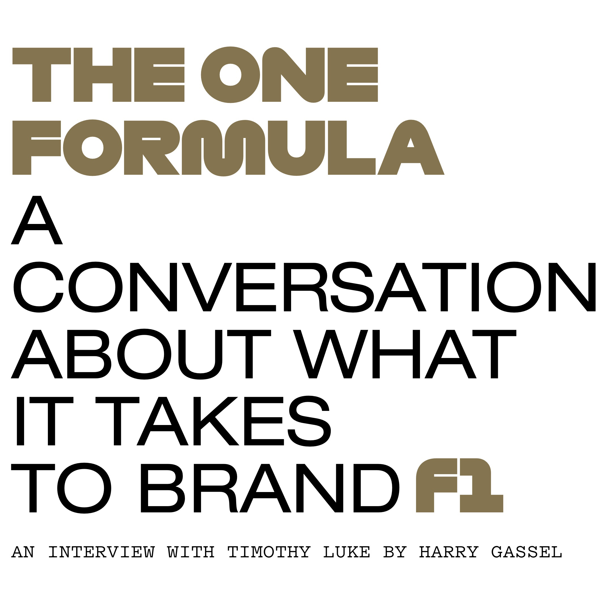

For those in creative pursuits, it can be either a dream or nightmare to balance personal work with more professional, stable employment. Geordie Wood, Photo Director at The FADER, manages to gracefully hold onto both. For the uninitiated, The FADER is an NYC-based music publication that also focuses on art, culture, and style.
HG: Hi Luke. Lets start with your background. How did you get into this mess?
TL:
I had a weird roundabout path to where I am. I went to a no name, liberal arts school in the Midwest, Taylor University, but I was always really motivated to be a graphic designer. So I did a couple of internships when I was in school, one was at Wired magazine and one was at Sports Illustrated. The Wired internship lead to freelance work really quickly while I was still in undergrad. I was hired at the New Yorker as a designer, and we were working on a redesign.
I had a weird roundabout path to where I am. I went to a no name, liberal arts school in the Midwest, Taylor University, but I was always really motivated to be a graphic designer. So I did a couple of internships when I was in school, one was at Wired magazine and one was at Sports Illustrated. The Wired internship lead to freelance work really quickly while I was still in undergrad. I was hired at the New Yorker as a designer, and we were working on a redesign.
I had a weird roundabout path to where I am. I went to a no name, liberal arts school in the Midwest, Taylor University, but I was always really motivated to be a graphic designer. So I did a couple of internships when I was in school, one was at Wired magazine and one was at Sports Illustrated. The Wired internship lead to freelance work really quickly while I was still in undergrad. I was hired at the New Yorker as a designer, and we were working on a redesign.
I had a weird roundabout path to where I am. I went to a no name, liberal arts school in the Midwest, Taylor University, but I was always really motivated to be a graphic designer. So I did a couple of internships when I was in school, one was at Wired magazine and one was at Sports Illustrated. The Wired internship lead to freelance work really quickly while I was still in undergrad. I was hired at the New Yorker as a designer, and we were working on a redesign.